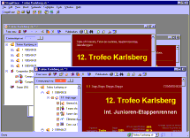

Multiple Windows
Open
StageRace fully supports the Windows® Multiple Document Interface,
which means that you can open:
- Multiple event files simultaneously; and

Open multiple event files simultaneously for instance if you have multiple
races to administrate at the same time or want to copy competitors from
one file to another.
Use or
in the menu to create the first window
for an existing or a new event file.
- Multiple windows for the same event file simultaneously.

Open multiple windows for the same event file for instance if you need
to compare two classifications from the same event or to work on teams
and competitors at the same time.
Use in the
menu to create the second or subsequent windows for an event file that
is already opened.
Close
You can close windows by:
- Single-clicking on the × icon
in the upper right corner of the window, using the left mouse button; or
- Pressing
the Ctrl+F4 key combination on your keyboard.
Once the last window is closing, StageRace closes the event file, if necessary
asking if saving is necessary.
To close all windows at once, use in
the menu.

|